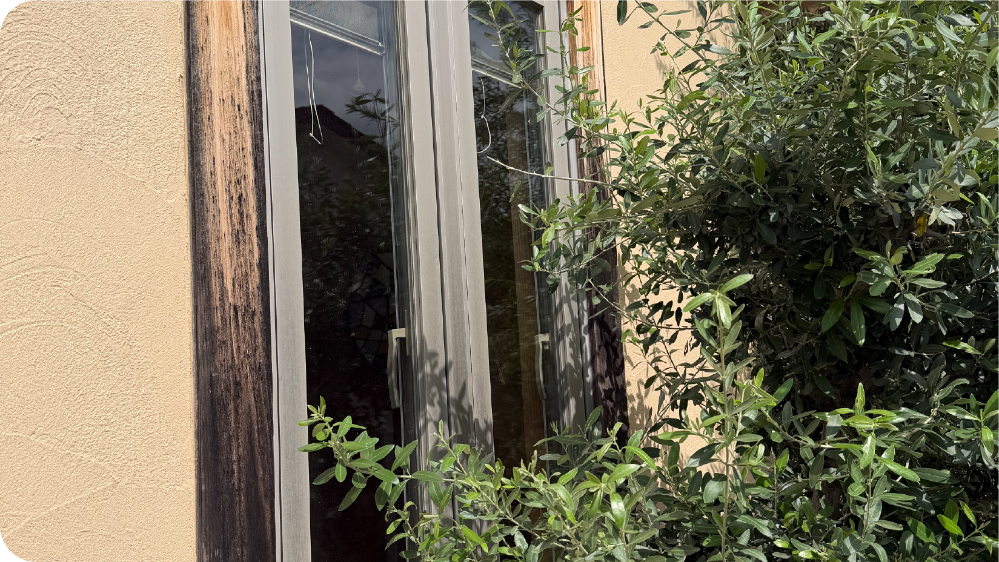

「通い・訪問・泊まり」で、
住み慣れた自宅での
暮らしを支えます
「自宅で暮らし続けたい」という想いを大切に、 「通い」を中心に「訪問」「泊まり」を組み合わせて、 日々の生活を支えます。
「入浴や食事のために通いたい」 「自宅での生活を手伝ってほしい」 「家族が留守の間は泊まりたい」など、 ご本人の体調やご家族の状況に合わせて、 利用方法を一緒に考えます。
一つの事業所が継続して関わることで、 日々の変化にも気づき、 その時々に必要な支援につなげていきます。
